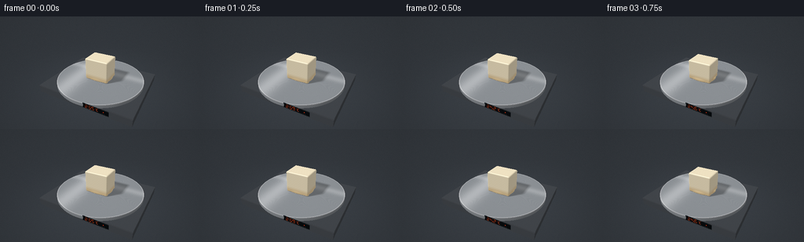
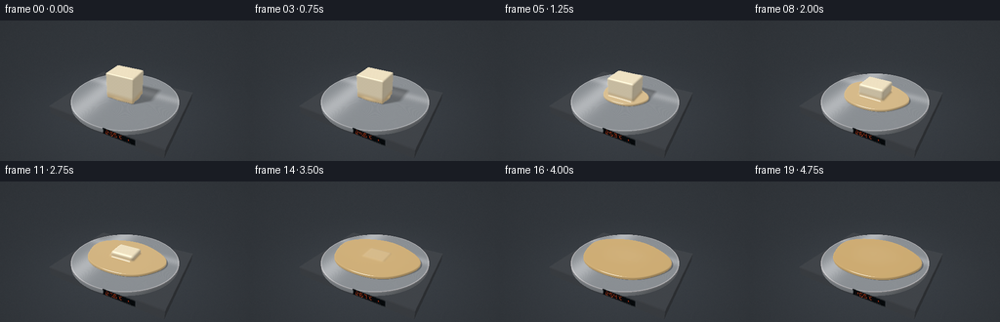

CODING AGENTS AS PIXEL WORLD MODELS
traex/GPT-6.1-Sol · phygen_100
点击播放 · 原生 RGB 像素
逐轮保存的候选
回放视频、检查图与代码变化。
每份候选均可单独播放。实际图片检查记录在下方工具轨迹中。
候选 01播放与检查图
点击播放 · 原生 RGB 像素


展开代码变化
--- 上一保存版本
+++ 本次保存版本
@@ -0,0 +1,198 @@
+from pathlib import Path
+import numpy as np
+from PIL import Image, ImageDraw, ImageFilter
+import artifact_io
+
+ROOT=Path(__file__).resolve().parent
+W,H=512,288
+Y,X=np.mgrid[0:H,0:W]
+rng=np.random.default_rng(8)
+def norm(v): return v/np.maximum(np.linalg.norm(v,axis=-1,keepdims=True),1e-9)
+cam=np.array([4.25,-7.8,5.4])
+target=np.array([0.,0.,.35])
+fwd=norm(target-cam); right=norm(np.cross(fwd,[0,0,1])); up=np.cross(right,fwd)
+uvx=(X+.5-W/2)/H; uvy=-(Y+.5-H/2)/H
+rays=norm(fwd+uvx[...,None]*right*.72+uvy[...,None]*up*.72)
+light=norm(np.array([-3.,-4.,7.]))
+
+def wax_sdf(p,s):
+ f=max((1-s)**1.48,.00005)
+ a=.76*f**.11; b=.60*f**.11; c=.70*f**.78
+ rad=min(.075+.13*s,min(a,b,c)*.88)
+ center=np.array([.10*s,-.055*s,.052+c])
+ q=p-center
+ q=q.copy(); q[...,0]-=.15*s*(q[...,2]/max(2*c,.04))
+ # The vertical faces soften before the entire block collapses.
+ q=np.abs(q)-np.array([a-rad,b-rad,c-rad])
+ ds=np.linalg.norm(np.maximum(q,0),axis=-1)+np.minimum(np.max(q,axis=-1),0)-rad
+ vol=2.38*(1-f)
+ depth=.155+.023*s
+ R=max(.74,np.sqrt(max(vol,.02)/(np.pi*.77*depth)))
+ cx=.035*s; cy=-.08*s
+ xx=p[...,0]-cx; yy=(p[...,1]-cy)/.77
+ theta=np.arctan2(yy,xx)
+ irregular=1+.025*np.sin(3*theta+.7)+.018*np.cos(5*theta-1.2)
+ rho=np.sqrt(xx*xx+yy*yy)/irregular
+ # A thin rounded meniscus and low, gently curved molten surface.
+ rr=.045
+ ztop=.052+depth-.025*np.minimum(rho/R,1)**2
+ q1=(rho-R+rr)*.77
+ q2=np.abs(p[...,2]-(ztop+.052)/2)-(ztop-.052)/2+rr
+ dp=np.minimum(np.maximum(q1,q2),0)+np.sqrt(np.maximum(q1,0)**2+np.maximum(q2,0)**2)-rr
+ k=.095+.06*s
+ h=np.clip(.5+.5*(dp-ds)/k,0,1)
+ return dp*(1-h)+ds*h-k*h*(1-h)
+
+def box_hit(d,lo,hi):
+ aa=(lo-cam)/d; bb=(hi-cam)/d
+ near=np.maximum.reduce(np.minimum(aa,bb),axis=-1)
+ far=np.minimum.reduce(np.maximum(aa,bb),axis=-1)
+ valid=(far>=np.maximum(near,0))
+ return near,far,valid
+
+# Static studio: a brushed aluminum disk on a charcoal laboratory heater.
+base=np.zeros((H,W,3),float)
+horizon=np.clip((Y/H),0,1)
+base[:]=np.array([.052,.062,.073])*(.75+.55*horizon[...,None])
+# Defocused reflected warm lights, deliberately subdued.
+for cx,cy,sig,col in [(58,39,21,[.043,.025,.007]),(425,28,27,[.034,.017,.004]),(381,99,42,[.012,.018,.025])]:
+ blur=np.exp(-((X-cx)**2+(Y-cy)**2)/(2*sig*sig))
+ base+=blur[...,None]*col
+floor_t=(-.66-cam[2])/rays[...,2]
+floor_p=cam+floor_t[...,None]*rays
+floor_valid=floor_t>0
+floor_col=np.array([.034,.041,.050])*(.85+.35*np.exp(-np.sum(floor_p[...,:2]**2,axis=-1)/22))[...,None]
+noise=rng.normal(0,.0015,(H,W,1))
+base=np.where(floor_valid[...,None],floor_col+noise,base)
+# Ray intersection with the appliance's square, low base.
+near,far,valid=box_hit(rays,np.array([-3.05,-2.42,-.65]),np.array([3.05,2.42,-.15]))
+tbase=np.where(valid,near,np.inf)
+pbase=cam+np.where(valid,near,0)[...,None]*rays
+bn=np.zeros_like(pbase)
+for ax,low,high in [(0,-3.05,3.05),(1,-2.42,2.42),(2,-.65,-.15)]:
+ bn[...,ax]=np.where(abs(pbase[...,ax]-low)<.0001,-1,np.where(abs(pbase[...,ax]-high)<.0001,1,0))
+bdot=np.maximum(bn@light,0)
+bcol=np.array([.043,.049,.057])*(.5+.8*bdot[...,None])
+bcol+=.012*np.exp(-((pbase[...,2]+.19)/.022)**2)[...,None]
+bcol+=rng.normal(0,.0009,(H,W,1))
+base=np.where(valid[...,None],bcol,base)
+# Metal disk: upper face, sidewall, and bevel.
+plate_z=.05; radius=2.80
+ttop=(plate_z-cam[2])/rays[...,2]
+pplate=cam+ttop[...,None]*rays
+radial=np.linalg.norm(pplate[...,:2],axis=-1)
+topok=(ttop>0)&(radial<=radius)
+a=np.sum(rays[...,:2]**2,axis=-1); b=2*np.sum(cam[:2]*rays[...,:2],axis=-1); c=np.sum(cam[:2]**2)-radius**2
+disc=b*b-4*a*c
+ts=(-b-np.sqrt(np.maximum(disc,0)))/(2*a)
+ps=cam+ts[...,None]*rays
+sideok=(disc>=0)&(ps[...,2]>=-.15)&(ps[...,2]<.05)
+side_n=norm(np.concatenate([ps[...,:2],np.zeros((H,W,1))],axis=-1))
+side_col=np.array([.26,.28,.30])*(.35+.65*np.maximum(side_n@light,0)[...,None])
+side_col+=.09*np.exp(-((ps[...,2]-.015)/.011)**2)[...,None]
+base=np.where(sideok[...,None],side_col,base)
+# Brushed silver, fine concentric tooling marks and long soft reflections.
+metal_noise=rng.normal(0,.002,(H,W))
+brush=.010*np.sin(radial*310)+.004*np.sin(radial*850)
+ref=.20*np.exp(-((pplate[...,0]+1.3)/.65)**2)+.12*np.exp(-((pplate[...,1]-.8)/.32)**2)
+metal=np.array([.265,.285,.305])+ (brush+ref+metal_noise)[...,None]
+bevel=np.exp(-((radial-(radius-.035))/.018)**2)
+metal+=bevel[...,None]*.22
+# Barely visible scratches on the working surface.
+metal+= (.002*np.sin(pplate[...,0]*960+pplate[...,1]*50))[...,None]
+base=np.where(topok[...,None],metal,base)
+static_depth=np.minimum(np.where(topok,ttop,np.inf),np.where(sideok,ts,np.inf))
+static_depth=np.minimum(static_depth,tbase)
+
+# Bounds for the procedural wax surface.
+wnear,wfar,wok=box_hit(rays,np.array([-2.75,-2.22,.02]),np.array([2.75,2.22,1.65]))
+# The heater's front panel is textured in its own plane.
+# Draw LED readout then map the texture using world-space coordinates.
+def led_texture(temp):
+ im=Image.new('RGB',(360,96),(12,17,20)); d=ImageDraw.Draw(im)
+ d.rounded_rectangle((4,5,354,90),radius=9,fill=(7,10,12),outline=(55,60,64),width=3)
+ segs={'0':'abcdef','1':'bc','2':'abged','3':'abgcd','4':'fgbc','5':'afgcd','6':'afgecd','7':'abc','8':'abcdefg','9':'abcdfg'}
+ coords={'a':(5,2,28,6),'b':(28,6,32,30),'c':(28,34,32,59),'d':(5,59,28,63),'e':(1,34,5,59),'f':(1,6,5,30),'g':(5,30,28,34)}
+ for j,ch in enumerate(f'{temp:03d}'):
+ ox=34+j*46; oy=17
+ for key,rect in coords.items():
+ x0,y0,x1,y1=rect
+ d.rounded_rectangle((ox+x0,oy+y0,ox+x1,oy+y1),radius=2,fill=(255,78,28) if key in segs[ch] else (43,20,17))
+ d.ellipse((177,18,186,27),outline=(246,83,37),width=2)
+ d.line((215,21,198,21,195,29,195,59,201,66,215,66),fill=(245,82,34),width=4)
+ d.ellipse((280,37,294,51),fill=(255,66,19))
+ d.line((260,75,317,75),fill=(73,78,80),width=2)
+ return np.asarray(im)/255.
+
+frames=[]
+for i in range(20):
+ t=i/19
+ s=t*t*(3-2*t)
+ # Distance marching is limited to the wax bounding box.
+ dist=np.maximum(wnear,0).copy()
+ active=wok.copy(); hit=np.zeros((H,W),bool)
+ for step in range(125):
+ idx=np.where(active)
+ if len(idx[0])==0: break
+ p=cam+dist[idx][...,None]*rays[idx]
+ dd=wax_sdf(p,s)
+ close=dd<.0010
+ hit[idx[0][close],idx[1][close]]=True
+ dist[idx]+=np.maximum(dd*.79,.00035)
+ active[idx]=~close & (dist[idx]<wfar[idx]) & (dist[idx]<static_depth[idx])
+ img=base.copy()
+ # Accurate wax shadows across the aluminum, with broad penumbra.
+ idx=np.where(topok)
+ pp=pplate[idx]+np.array([0,0,.006])
+ sh=np.ones(len(pp)); sd=np.full(len(pp),.02)
+ for j in range(45):
+ de=wax_sdf(pp+sd[:,None]*light,s)
+ sh=np.minimum(sh,8*de/np.maximum(sd,.001))
+ sd+=np.clip(de,.015,.15)
+ shadow=.48+.52*np.clip(sh,0,1)
+ img[idx]=metal[idx]*shadow[:,None]
+ # Low amber spill from the heating element around the rim.
+ rim=np.exp(-((radial-2.79)/.024)**2)*(.02+.045*s)
+ img+=np.where(topok[...,None],rim[...,None]*np.array([1.,.21,.035]),0)
+ idx=np.where(hit)
+ pp=cam+dist[idx][...,None]*rays[idx]
+ eps=.003
+ nn=np.stack([wax_sdf(pp+np.eye(3)[j]*eps,s)-wax_sdf(pp-np.eye(3)[j]*eps,s) for j in range(3)],axis=-1)
+ nn=norm(nn)
+ v=-rays[idx]
+ ndl=np.maximum(nn@light,0)
+ ndv=np.maximum(np.sum(nn*v,axis=-1),.001)
+ hh=norm(light+v); nh=np.maximum(np.sum(nn*hh,axis=-1),0)
+ # Pool becomes more translucent and glossy, while the remaining solid stays opaque.
+ poolweight=1-np.clip((pp[:,2]-.22)/.24,0,1)
+ solid=np.array([.87,.765,.545]); liquid=np.array([.61,.405,.155])
+ blend=poolweight*(.63+.37*s)
+ col=solid*(1-blend[:,None])+liquid*blend[:,None]
+ tex=.008*np.sin(pp[:,0]*35+np.sin(pp[:,1]*30))*np.sin(pp[:,2]*38+pp[:,1]*13)
+ col+=tex[:,None]*(1-blend[:,None])
+ # Bright softly scattered wax; denser warm color at the rounded edges.
+ lighting=.34+.61*ndl+.13*np.maximum(nn[:,2],0)
+ out=col*lighting[:,None]
+ out+=np.array([.095,.063,.024])[None,:]*(1-ndl[:,None])*(.4+.6*blend[:,None])
+ spec_power=35+110*blend
+ spec=nh**spec_power*(.18+.55*blend)
+ out+=spec[:,None]*np.array([1.,.95,.79])
+ # Large rectangular studio-light reflection on the molten surface.
+ refl=2*np.sum(nn*v,axis=-1)[:,None]*nn-v
+ softbox=np.exp(-((refl[:,0]+.35)/.20)**6-((refl[:,1]+.30)/.40)**6)*np.clip(refl[:,2],0,1)
+ fres=.035+.33*(1-ndv)**5
+ out+=softbox[:,None]*(.14+.48*blend[:,None])+fres[:,None]*np.array([.40,.43,.45])
+ img[idx]=out
+ # Increasing temperature readout sits flush in the heater front, not as a caption.
+ panel=(valid & (abs(pbase[...,1]+2.42)<.0001) & (pbase[...,0]>.20)&(pbase[...,0]<1.8)&(pbase[...,2]>-.59)&(pbase[...,2]<-.25))
+ tex=led_texture(round(35+70*t))
+ tx=np.clip(((pbase[...,0]-.20)/1.6*359).astype(int),0,359)
+ ty=np.clip(((-.25-pbase[...,2])/.34*95).astype(int),0,95)
+ img[panel]=tex[ty[panel],tx[panel]]**2.2
+ # Photographic display conversion, a subtle vignette and downsampling.
+ vig=1-.13*((X-W/2)/(W/2))**2-.07*((Y-H/2)/(H/2))**2
+ rgb=np.uint8(np.clip(np.maximum(img,0)*vig[...,None],0,1)**(1/2.2)*255)
+ frame=np.asarray(Image.fromarray(rgb).resize((256,144),Image.Resampling.LANCZOS))
+ frames.append(frame)
+ print(f'Frame {i+1}/20',flush=True)
+artifact_io.save(np.stack(frames), ROOT)
候选 02播放与检查图
点击播放 · 原生 RGB 像素

展开代码变化
--- 上一保存版本
+++ 本次保存版本
@@ -9,10 +9,10 @@
rng=np.random.default_rng(8)
def norm(v): return v/np.maximum(np.linalg.norm(v,axis=-1,keepdims=True),1e-9)
cam=np.array([4.25,-7.8,5.4])
-target=np.array([0.,0.,.35])
+target=np.array([0.,0.,.25])
fwd=norm(target-cam); right=norm(np.cross(fwd,[0,0,1])); up=np.cross(right,fwd)
uvx=(X+.5-W/2)/H; uvy=-(Y+.5-H/2)/H
-rays=norm(fwd+uvx[...,None]*right*.72+uvy[...,None]*up*.72)
+rays=norm(fwd+uvx[...,None]*right*.48+uvy[...,None]*up*.48)
light=norm(np.array([-3.,-4.,7.]))
def wax_sdf(p,s):
@@ -179,7 +179,7 @@
out+=spec[:,None]*np.array([1.,.95,.79])
# Large rectangular studio-light reflection on the molten surface.
refl=2*np.sum(nn*v,axis=-1)[:,None]*nn-v
- softbox=np.exp(-((refl[:,0]+.35)/.20)**6-((refl[:,1]+.30)/.40)**6)*np.clip(refl[:,2],0,1)
+ softbox=np.exp(-((refl[:,0]+.30)/.16)**6-((refl[:,1]-.74)/.17)**6)*np.clip(refl[:,2],0,1)
fres=.035+.33*(1-ndv)**5
out+=softbox[:,None]*(.14+.48*blend[:,None])+fres[:,None]*np.array([.40,.43,.45])
img[idx]=out
候选 03播放与检查图
可观测工具轨迹
实际执行的命令与返回图片。
命令 1exit 0
/bin/bash -lc 'ls -la && cat prompt.txt && cat GENERATION_RULES.md && cat task_spec.json'
命令 2exit 0
/bin/bash -lc "cat artifact_io.py && python - <<'PY'
import numpy,PIL
print('numpy/PIL ready')
PY"命令 3exit 0
/bin/bash -lc "cat > generate.py <<'PY'
from pathlib import Path
import numpy as np
from PIL import Image, ImageDraw, ImageFilter
import artifact_io
ROOT=Path(__file__).resolve().parent
W,H=512,288
Y,X=np.mgrid[0:H,0:W]
rng=np.random.default_rng(8)
def norm(v): return v/np.maximum(np.linalg.norm(v,axis=-1,keepdims=True),1e-9)
cam=np.array([4.25,-7.8,5.4])
target=np.array([0.,0.,.35])
fwd=norm(target-cam); right=norm(np.cross(fwd,[0,0,1])); up=np.cross(right,fwd)
uvx=(X+.5-W/2)/H; uvy=-(Y+.5-H/2)/H
rays=norm(fwd+uvx[...,None]*right*.72+uvy[...,None]*up*.72)
light=norm(np.array([-3.,-4.,7.]))
def wax_sdf(p,s):
f=max((1-s)**1.48,.00005)
a=.76*f**.11; b=.60*f**.11; c=.70*f**.78
rad=min(.075+.13*s,min(a,b,c)*.88)
center=np.array([.10*s,-.055*s,.052+c])
q=p-center
q=q.copy(); q[...,0]-=.15*s*(q[...,2]/max(2*c,.04))
# The vertical faces soften before the entire block collapses.
q=np.abs(q)-np.array([a-rad,b-rad,c-rad])
ds=np.linalg.norm(np.maximum(q,0),axis=-1)+np.minimum(np.max(q,axis=-1),0)-rad
vol=2.38*(1-f)
depth=.155+.023*s
R=max(.74,np.sqrt(max(vol,.02)/(np.pi*.77*depth)))
cx=.035*s; cy=-.08*s
xx=p[...,0]-cx; yy=(p[...,1]-cy)/.77
theta=np.arctan2(yy,xx)
irregular=1+.025*np.sin(3*theta+.7)+.018*np.cos(5*theta-1.2)
rho=np.sqrt(xx*xx+yy*yy)/irregular
# A thin rounded meniscus and low, gently curved molten surface.
rr=.045
ztop=.052+depth-.025*np.minimum(rho/R,1)**2
q1=(rho-R+rr)*.77
q2=np.abs(p[...,2]-(ztop+.052)/2)-(ztop-.052)/2+rr
dp=np.minimum(np.maximum(q1,q2),0)+np.sqrt(np.maximum(q1,0)**2+np.maximum(q2,0)**2)-rr
k=.095+.06*s
h=np.clip(.5+.5*(dp-ds)/k,0,1)
return dp*(1-h)+ds*h-k*h*(1-h)
def box_hit(d,lo,hi):
aa=(lo-cam)/d; bb=(hi-cam)/d
near=np.maximum.reduce(np.minimum(aa,bb),axis=-1)
far=np.minimum.reduce(np.maximum(aa,bb),axis=-1)
valid=(far>=np.maximum(near,0))
return near,far,valid
# Static studio: a brushed aluminum disk on a charcoal laboratory heater.
base=np.zeros((H,W,3),float)
horizon=np.clip((Y/H),0,1)
base[:]=np.array([.052,.062,.073])*(.75+.55*horizon[...,None])
# Defocused reflected warm lights, deliberately subdued.
for cx,cy,sig,col in [(58,39,21,[.043,.025,.007]),(425,28,27,[.034,.017,.004]),(381,99,42,[.012,.018,.025])]:
blur=np.exp(-((X-cx)**2+(Y-cy)**2)/(2*sig*sig))
base+=blur[...,None]*col
floor_t=(-.66-cam[2])/rays[...,2]
floor_p=cam+floor_t[...,None]*rays
floor_valid=floor_t>0
floor_col=np.array([.034,.041,.050])*(.85+.35*np.exp(-np.sum(floor_p[...,:2]**2,axis=-1)/22))[...,None]
noise=rng.normal(0,.0015,(H,W,1))
base=np.where(floor_valid[...,None],floor_col+noise,base)
# Ray intersection with the appliance's square, low base.
near,far,valid=box_hit(rays,np.array([-3.05,-2.42,-.65]),np.array([3.05,2.42,-.15]))
tbase=np.where(valid,near,np.inf)
pbase=cam+np.where(valid,near,0)[...,None]*rays
bn=np.zeros_like(pbase)
for ax,low,high in [(0,-3.05,3.05),(1,-2.42,2.42),(2,-.65,-.15)]:
bn[...,ax]=np.where(abs(pbase[...,ax]-low)<.0001,-1,np.where(abs(pbase[...,ax]-high)<.0001,1,0))
bdot=np.maximum(bn@light,0)
bcol=np.array([.043,.049,.057])*(.5+.8*bdot[...,None])
bcol+=.012*np.exp(-((pbase[...,2]+.19)/.022)**2)[...,None]
bcol+=rng.normal(0,.0009,(H,W,1))
base=np.where(valid[...,None],bcol,base)
# Metal disk: upper face, sidewall, and bevel.
plate_z=.05; radius=2.80
ttop=(plate_z-cam[2])/rays[...,2]
pplate=cam+ttop[...,None]*rays
radial=np.linalg.norm(pplate[...,:2],axis=-1)
topok=(ttop>0)&(radial<=radius)
a=np.sum(rays[...,:2]**2,axis=-1); b=2*np.sum(cam[:2]*rays[...,:2],axis=-1); c=np.sum(cam[:2]**2)-radius**2
disc=b*b-4*a*c
ts=(-b-np.sqrt(np.maximum(disc,0)))/(2*a)
ps=cam+ts[...,None]*rays
sideok=(disc>=0)&(ps[...,2]>=-.15)&(ps[...,2]<.05)
side_n=norm(np.concatenate([ps[...,:2],np.zeros((H,W,1))],axis=-1))
side_col=np.array([.26,.28,.30])*(.35+.65*np.maximum(side_n@light,0)[...,None])
side_col+=.09*np.exp(-((ps[...,2]-.015)/.011)**2)[...,None]
base=np.where(sideok[...,None],side_col,base)
# Brushed silver, fine concentric tooling marks and long soft reflections.
metal_noise=rng.normal(0,.002,(H,W))
brush=.010*np.sin(radial*310)+.004*np.sin(radial*850)
ref=.20*np.exp(-((pplate[...,0]+1.3)/.65)**2)+.12*np.exp(-((pplate[...,1]-.8)/.32)**2)
metal=np.array([.265,.285,.305])+ (brush+ref+metal_noise)[...,None]
bevel=np.exp(-((radial-(radius-.035))/.018)**2)
metal+=bevel[...,None]*.22
# Barely visible scratches on the working surface.
metal+= (.002*np.sin(pplate[...,0]*960+pplate[...,1]*50))[...,None]
base=np.where(topok[...,None],metal,base)
static_depth=np.minimum(np.where(topok,ttop,np.inf),np.where(sideok,ts,np.inf))
static_depth=np.minimum(static_depth,tbase)
# Bounds for the procedural wax surface.
wnear,wfar,wok=box_hit(rays,np.array([-2.75,-2.22,.02]),np.array([2.75,2.22,1.65]))
# The heater's front panel is textured in its own plane.
# Draw LED readout then map the texture using world-space coordinates.
def led_texture(temp):
im=Image.new('RGB',(360,96),(12,17,20)); d=ImageDraw.Draw(im)
d.rounded_rectangle((4,5,354,90),radius=9,fill=(7,10,12),outline=(55,60,64),width=3)
segs={'0':'abcdef','1':'bc','2':'abged','3':'abgcd','4':'fgbc','5':'afgcd','6':'afgecd','7':'abc','8':'abcdefg','9':'abcdfg'}
coords={'a':(5,2,28,6),'b':(28,6,32,30),'c':(28,34,32,59),'d':(5,59,28,63),'e':(1,34,5,59),'f':(1,6,5,30),'g':(5,30,28,34)}
for j,ch in enumerate(f'{temp:03d}'):
ox=34+j*46; oy=17
for key,rect in coords.items():
x0,y0,x1,y1=rect
d.rounded_rectangle((ox+x0,oy+y0,ox+x1,oy+y1),radius=2,fill=(255,78,28) if key in segs[ch] else (43,20,17))
d.ellipse((177,18,186,27),outline=(246,83,37),width=2)
d.line((215,21,198,21,195,29,195,59,201,66,215,66),fill=(245,82,34),width=4)
d.ellipse((280,37,294,51),fill=(255,66,19))
d.line((260,75,317,75),fill=(73,78,80),width=2)
return np.asarray(im)/255.
frames=[]
for i in range(20):
t=i/19
s=t*t*(3-2*t)
# Distance marching is limited to the wax bounding box.
dist=np.maximum(wnear,0).copy()
active=wok.copy(); hit=np.zeros((H,W),bool)
for step in range(125):
idx=np.where(active)
if len(idx[0])==0: break
p=cam+dist[idx][...,None]*rays[idx]
dd=wax_sdf(p,s)
close=dd<.0010
hit[idx[0][close],idx[1][close]]=True
dist[idx]+=np.maximum(dd*.79,.00035)
active[idx]=~close & (dist[idx]<wfar[idx]) & (dist[idx]<static_depth[idx])
img=base.copy()
# Accurate wax shadows across the aluminum, with broad penumbra.
idx=np.where(topok)
pp=pplate[idx]+np.array([0,0,.006])
sh=np.ones(len(pp)); sd=np.full(len(pp),.02)
for j in range(45):
de=wax_sdf(pp+sd[:,None]*light,s)
sh=np.minimum(sh,8*de/np.maximum(sd,.001))
sd+=np.clip(de,.015,.15)
shadow=.48+.52*np.clip(sh,0,1)
img[idx]=metal[idx]*shadow[:,None]
# Low amber spill from the heating element around the rim.
rim=np.exp(-((radial-2.79)/.024)**2)*(.02+.045*s)
img+=np.where(topok[...,None],rim[...,None]*np.array([1.,.21,.035]),0)
idx=np.where(hit)
pp=cam+dist[idx][...,None]*rays[idx]
eps=.003
nn=np.stack([wax_sdf(pp+np.eye(3)[j]*eps,s)-wax_sdf(pp-np.eye(3)[j]*eps,s) for j in range(3)],axis=-1)
nn=norm(nn)
v=-rays[idx]
ndl=np.maximum(nn@light,0)
ndv=np.maximum(np.sum(nn*v,axis=-1),.001)
hh=norm(light+v); nh=np.maximum(np.sum(nn*hh,axis=-1),0)
# Pool becomes more translucent and glossy, while the remaining solid stays opaque.
poolweight=1-np.clip((pp[:,2]-.22)/.24,0,1)
solid=np.array([.87,.765,.545]); liquid=np.array([.61,.405,.155])
blend=poolweight*(.63+.37*s)
col=solid*(1-blend[:,None])+liquid*blend[:,None]
tex=.008*np.sin(pp[:,0]*35+np.sin(pp[:,1]*30))*np.sin(pp[:,2]*38+pp[:,1]*13)
col+=tex[:,None]*(1-blend[:,None])
# Bright softly scattered wax; denser warm color at the rounded edges.
lighting=.34+.61*ndl+.13*np.maximum(nn[:,2],0)
out=col*lighting[:,None]
out+=np.array([.095,.063,.024])[None,:]*(1-ndl[:,None])*(.4+.6*blend[:,None])
spec_power=35+110*blend
spec=nh**spec_power*(.18+.55*blend)
out+=spec[:,None]*np.array([1.,.95,.79])
# Large rectangular studio-light reflection on the molten surface.
refl=2*np.sum(nn*v,axis=-1)[:,None]*nn-v
softbox=np.exp(-((refl[:,0]+.35)/.20)**6-((refl[:,1]+.30)/.40)**6)*np.clip(refl[:,2],0,1)
fres=.035+.33*(1-ndv)**5
out+=softbox[:,None]*(.14+.48*blend[:,None])+fres[:,None]*np.array([.40,.43,.45])
img[idx]=out
# Increasing temperature readout sits flush in the heater front, not as a caption.
panel=(valid & (abs(pbase[...,1]+2.42)<.0001) & (pbase[...,0]>.20)&(pbase[...,0]<1.8)&(pbase[...,2]>-.59)&(pbase[...,2]<-.25))
tex=led_texture(round(35+70*t))
tx=np.clip(((pbase[...,0]-.20)/1.6*359).astype(int),0,359)
ty=np.clip(((-.25-pbase[...,2])/.34*95).astype(int),0,95)
img[panel]=tex[ty[panel],tx[panel]]**2.2
# Photographic display conversion, a subtle vignette and downsampling.
vig=1-.13*((X-W/2)/(W/2))**2-.07*((Y-H/2)/(H/2))**2
rgb=np.uint8(np.clip(np.maximum(img,0)*vig[...,None],0,1)**(1/2.2)*255)
frame=np.asarray(Image.fromarray(rgb).resize((256,144),Image.Resampling.LANCZOS))
frames.append(frame)
print(f'Frame {i+1}/20',flush=True)
artifact_io.save(np.stack(frames), ROOT)
PY
OPENBLAS_NUM_THREADS=1 python generate.py"命令 4exit 0
/bin/bash -lc "python - <<'PY'
p='generate.py'
s=open(p).read().replace('target=np.array([0.,0.,.35])','target=np.array([0.,0.,.25])').replace('right*.72+uvy[...,None]*up*.72','right*.48+uvy[...,None]*up*.48').replace(\"((refl[:,0]+.35)/.20)**6-((refl[:,1]+.30)/.40)**6\", \"((refl[:,0]+.30)/.16)**6-((refl[:,1]-.74)/.17)**6\")
open(p,'w').write(s)
PY
OPENBLAS_NUM_THREADS=1 python generate.py"命令 5exit 0
/bin/bash -lc "python - <<'PY'
from pathlib import Path
import numpy as np
from PIL import Image
p=Path('.')
a=np.load(p/'pixels.npz')['pixels']
assert a.shape==(144,256,20)
assert len(list((p/'frames').glob('*.png')))==20
assert Image.open(p/'frames/19.png').mode=='RGB'
for name in ['generate.py','pixels.npz','index.html','inspection.png','transition_check.png']:
print(name, (p/name).stat().st_size)
PY"视觉工具实际返回图片 1

视觉工具实际返回图片 2

保存候选 3 份；完成命令 5 次；可验证图片返回 2 张。原始 API 响应与完整日志保留在本地。